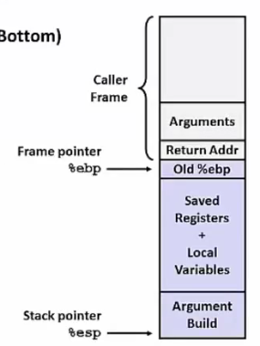

Computer Systems: A Programmer's Perspective - System Basic Notes
- Computer Systems: A Programmer's Perspective - System Basic Notes
1. 机器码与进制转换
1.1. 浮点数
规格化浮点数: 1.xxx 2^(exp - 127) - e.g `5 = 5.0 = 1.25 2^(129 - 127)`
- xxx: 尾数
- exp: 阶码
1.2. Stack Frame

# 准备阶段
# Caller-Save: %eax %ecx %edx
# Callee-Save: %ebx %esi %edi
# 传参顺序: rdi, dsi, rdx, rcx, r8, r9, stack
pushl %ebp
movl %esp, %ebp
pushl %ebx
# 结束阶段
movl -4(%ebp), %ebx
movl %ebp, %esp
popl %ebp
ret
x86_64: 可使用超出 Stack Pointer 128 bytes 的内存区域, 称为 Red Zone.
2. Architecture
2.1. Control Signal
| State | Signal |
|---|---|
| Fetch | icode,ifun rA,rB valC,valP |
| Decode | valA,srcA valB,srcB |
| Execute | valE Cond |
| Memory | valM read/write |
| WriteBack | E port,dstE M port,dstM |
| PCUpdate | PC |
2.2. Special Control Signal
- handle ret:
IRET in {D_icode, E_icode, M_icode} - load/use hazard:
E_icode in {IMRMOVL, IPOPL} && E_dstM in {d_srcA, d_srcB} - mispredicted branch:
E_icode in {IJXX} && !e_Cnd - exception:
m_stat in {SADR, SINS, SHLT} || W_stat in {SADR, SINS, SHLT}
2.3. Branch/Loop/Jump
PrectPC | W_valM(无法预测) | M_valP/M_valA
(在译码阶段合并信号量 valA 与 valP: PCUpdate 位于 Fetch,无需传递 valP, 只剩 call/jxxx 需要 valP)
- AT: always taken
- NT: never taken
- BTFNT: backward taken forward not taken
2.4. Forwarding
流水线中最早阶段的转发源, 优先级最高 execute > memory > write
int d_valA = [
D_icode in {ICALL, IJXX}: D_valP;
d_srcA == e_dstE : e_valE;
d_srcA == M_dstM : m_valM;
d_srcA == M_dstE : M_valE;
d_srcA == W_dstM : W_valM;
d_srcA == W_dstE : W_valE;
# register file
1 : d_rvalA;
];
2.5. Exception
流水线中最深的指令引起的异常, 优先级最高 e.g 访存阶段地址越界异常优先级高于取指阶段地址越界异常优先级
2.6. Efficence
CPI = 1.0 + lp + mp + rp:
- lp: load penalty(load/use hazard)
- mp: mispredicted branch penalty
- rp: return penalty
3. Optimization
3.1. Principles
- 合适的算法和数据结构
- 编写编译器能够有效优化的代码 e.g 寄存器别名,存储器别名,函数的副作用 导致编译器无法(不敢)合并/删除冗余代码
- 提高代码的并行性
- 消除不必要的访存 e.g 多次访存(可用中间量优化), 多次函数调用(可用宏/内联函数优化)
3.2. Tips
Replacement
- 用多条 Shift/Add/Sub 指令, 代替 Mul/Div
Branch
- 利用条件表达式代替条件分支语句: 降低预测错误惩罚
Code Motion
- 将不变测试条件/常变量的计算从循环中移出
- 将多次访存利用中间自动/寄存器变量改写成一次访存
Unrolling (Duff's Device)
循环展开: 增大循环的步长 - Duff's Device 以 7 为步长:
- 提升循环的运行效率
- 一次循环内: 可先将所有数据先读出来(Memory State),将进行计算(Excute State), 从而消除 Load/Use 冒险而产生的 Bubble
4. 异常控制流
理解异常控制流,有助于理解以下概念:
- 陷阱(trap)/系统调用(system call)
- 系统级 I/O
- 线程/进程(concurrency)
- 虚拟存储器
- 软件异常
4.1. 异常
分类
| 类别 | 原因 | 异步/同步 | 返回行为 | 例子 |
|---|---|---|---|---|
| interrupt | 输入/输出外部中断 | async | next(concurrency) | 磁盘 |
| trap | 主动异常/系统调用 | sync | next | write/intN |
| fault | 潜在可恢复的错误 | sync | current/abort | seg/float exp |
| abort | 不可恢复的错误 | sync | abort(not return) | 硬件错误 |
异常处理程序
异常处理程序主要分为 3 类:
- 控制权返回给 Instruction_current
- 控制权返回给 Instruction_next
- abort/exit
4.2. 进程
- 一个独立的逻辑控制流(并行执行)
- 一个私有的地址空间(缓存与虚拟存储器)
上下文
- 代码/数据,堆/栈,通用寄存器,程序计数器,环境变量,文件描述符集合
- 上下文切换:用户模式与内核模式的切换
- 高速缓存污染(pollution): 每次切换后,总是会发生 cold cache miss
进程控制
#include <sys/types.h>
#include <unistd.h>
#include <sys/wait.h>
#include <errno.h>
创建和终止进程
- 父进程与子进程获得 2 份独立的私有空间与 2 份独立的上下文, 不同的 PID(process id)
- 由于指针(如打开的文件描述符),有可能互相影响,但大体上互不影响
/*
* output: parent: x=0
* output: child: x=2
* 独立上下文代表拥有独立的通用寄存器与栈,代表拥有拷贝的自动变量(局部变量),互不影响地进行修改
*/
int main(void) {
pid_t pid;
int x = 1;
pid = fork();
if (pid == 0) { // child
printf("child: x=%d\n", ++x);
exit(0);
}
// parent
printf("parent: x=%d\n", --x);
exit(0);
}
回收子进程
#define N 2
int main(void) {
int status, i;
pid_t pid[N], retpid;
for (i = 0; i < N; i++) {
if ((pid[i] = fork()) == 0) { // child
exit(100+i);
}
}
// parent reaps(回收) N children in order
i = 0;
while((retpid = waitpid(pid[i++], &status, 0)) > 0) {
if (WIFEXITED(statue)) {
printf("child: %d terminated normally with exit status=%d\n",
retpid, WEXITSTATUS(status));
} else {
printf("child %d terminated abnormally\n", retpid);
}
}
// only if there are no more children, it can exit normally
if (errno != ECHILD) {
unix_error("waitpid error"); // exit with error log
}
exit(0); // exit normally
}
4.3. 信号
#include <sys/types.h>
#include <unistd.h>
#include <signal.h>
- 一个只发出而未被处理的信号为待处理信号
- 一种类型至多有一个待处理信号, 多余待处理信号不会进入处理队列,只是被简单丢弃
- 不可以用信号对其他事件进行计数, 同一事件多次发生产生的信号有可能被简单丢弃
处理信号
void handler(int sig) {
pid_t pid;
while ((pid = waitpid(-1, NULL, 0)) > 0) {
printf("Handler reaped child %d\n", (int)pid);
}
if (errno != ECHILD) {
unix_error("waitpid error");
} else {
sleep(2);
}
return;
}
int main(void) {
int i, n;
char buf[MAXBUF];
pid_t pid;
if (signal(SIGCHLD, handler) == SIG_ERR) {
unix_error("signal error");
}
for (i = 0; i < 3; I++) {
pid = fork();
if (pid ==0) {
printf("Hello from child %d\n", (int)getpid());
sleep(1);
exit(0);
}
}
// manually restart the READ call
while ((n = read(STDIN_FILENO, buf, sizeof(buf))) < 0) {
if (errno != EINTR) {
unix_error("read error");
}
printf("Parent processing input\n");
while(1) {
;
}
exit(0);
}
}
阻塞信号
// how: SIG_BLOCK, SIG_UNBLOCK, SIG_SETMASK, 是否阻塞set中的信号合集
int sigprocmask(int how, const sigset_t *set, sigset_t *oldset);
int sigemptyset(sigset_t *set);
int sigfillset(sigset_t *set);
int sigaddset(sigset_t *set, int signum);
int sigdelset(sigset_t *set, int signum);
int sigismember(const sigset_t *set， int signum);
void handler(int sig) {
pid_t pid;
while ((pid = waitpid(-1, NULL, 0)) > 0) {
deletejob(pid);
}
if (errno != ECHILD) {
unix_error("waitpid error");
}
}
// 保证父进程先执行 addjob, 再执行 deletejob
int main(int argc, char **argv) {
int pid;
sigset_t mask;
signal(SIGCHLD, handler;)
initjob();
while (1) {
sigemptyset(&mask);
sigaddset(&mask, SIGCHLD);
sigprocmask(SIG_BLOCK, &mask, NULL); // block SIGCHLD
if ((pid = fork()) == 0) {
// unblock SIGCHLD in child, make it can transfer signal
sigprocmask(SIG_UNBLOCK, &mask, NULL);
execve("/bin/date", argv, NULL);
}
// parent process
addjob(pid);
// after addjob, unblock SIGCHLD, make it can handle signal
sigprocmask(SIG_UNBLOCK, &mask, NULL);
}
}
4.4. 非本地跳转
#include <setjmp.h>
- setjmp - catch: 返回多次
- longjmp - throw: 不返回
5. 系统级 I/O
// robust I/O
ssize_t rio_readn(int fd, void *usrbuf, size_t n) {
size_t nleft = n;
ssize_t nread;
char *bufp = usrbuf;
while (nleft > 0) {
if ((nread = read(fd, bufp, nleft)) < 0) {
if (errno == EINTR) {
nread = 0; // interrupted by signal_handler, re-call read()
} else {
return -1;
}
} else if (nread == 0) {
break;
}
nleft -= nread;
bufp += nread; // remove data from bufp
}
return (n - left);
}
ssize_t rio_writen(int fd, void *usrbuf, size_t n) {
size_t nleft = n;
ssize_t nwritten;
char *bufp = usrbuf;
while (nleft > 0) {
if ((nwritten = read(fd, bufp, nleft)) < 0) {
if (errno == EINTR) {
nwritten = 0; // interrupted by signal_handler, re-call read()
} else {
return -1;
}
}
nleft -= nwritten;
bufp += nwritten; // remove data from bufp
}
return n;
}
5.1. socket I/O
限制
输出函数+输入函数: 中间必须插入 fflush, fseek, fsetpos, rewind 输入函数+输出函数: 中间必须插入 fseek, fsetpos, rewind
I/O 函数的选择
- sprintf+rio_writen: 格式化输出至套接口
- rio_readlineb+sscanf: 格式化输入
6. 网络
#include <netinet/in.h>
#include <arpa/inet.h>
#include <netdb.h>
int main(int argc, char *argv) {
char **pp;
struct in_addr addr;
struct hostent *hostp;
if (argc != 2) {
fprintf(stderr, "usage: %s <domain name or dotted-decimal>\n", argv[0]);
exit(0);
}
if (inet_aton(argv[1], &addr) != 0) {
hostp = gethostbyaddr((const char*)&addr, sizeof(addr), AF_INET);
} else {
hostp = gethostbyname(argv[1]);
}
printf("official hostname: %s\n:", hostp->h_name);
for (pp = hostp->h_aliases; *pp != NULL; pp++) {
printf("alias: %s\n", *pp);
}
for (pp = hostp->h_addr_list; *pp != NULL; pp++) {
addr.s_addr = ((struct in_addr *)*pp)->s_addr;
printf("address: %s\n", inet_ntoa(addr));
}
exit(0);
}
7. 并发
7.1. 锁
防止死锁: 每对互斥锁(s, t), 每个线程顺序请求锁, 逆序释放锁
8. 调试/测试
8.1. 日志
void unix_error(char *msg) {
fprintf(stderr, "%s: %s\n", msg, strerror(errno));
exit(0);
}
void posix_error(int code, char *msg) {
fprinf(stderr, "%s: %s\n", msg, strerror(code));
exit(0);
}
void dns_error(char *msg) {
fprintf(stderr, "%s: DNS error %d\n", msg, h_errno);
exit(0);
}
void app_error(char *msg) {
fprinf(stderr, "%s\n", msg);
exit(0);
}